Christoph Weniger — University of Amsterdam (GRAPPA)
LISA Hackathon — 27 July 2026
Concept lecture (30 min) before the hands-on tutorial
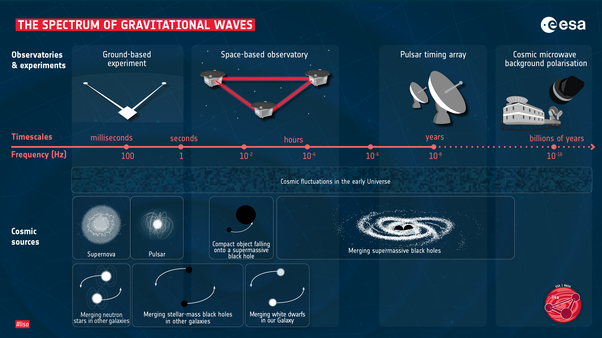
Credit: ESA
Motivation > The LISA mission
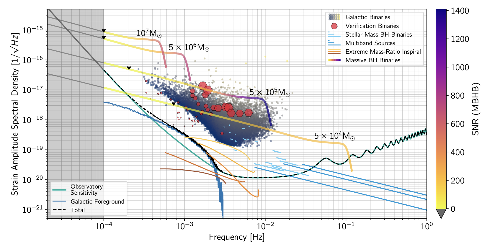
arXiv:2402.07571
Motivation > The LISA challenge
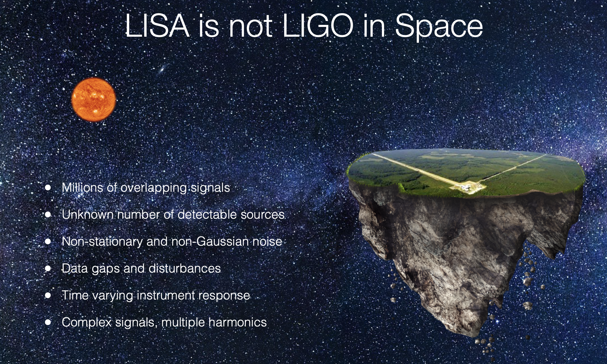
Slide & image credits: N. Cornish (LISA Nice 2023)
Using interpretative and generative AI to perform statistical analyses
Foundations of SBI > The inverse problem
forward — physics knowledge and assumptions
inverse — generating insights
Foundations of SBI > Bayesian inference
Bayesian inference provides a rule for updating our prior knowledge about parameter $\theta$ given new data $x$.
Note. SBI only requires samples from \(p(\mathbf{x}\mid\boldsymbol\theta)\) — i.e. a running simulator. Likelihood-based methods (MCMC, HMC, VI) need pointwise evaluations of \(p(\mathbf{x}\mid\boldsymbol\theta)\), which are often unavailable when detector effects or systematics must be marginalised (= integrated) out.
Foundations of SBI > A short history
We always want the posterior \(p(\boldsymbol\theta\mid\mathbf{x})\); only its representation changes: formula → samples → network.
Foundations of SBI > Neural networks
Two views of one object: a computation, and a graph. The weights in the formulas are the connections.
1 · As a computation
A stack of affine maps \(W\mathbf{h}+\mathbf{b}\) interleaved with a simple nonlinearity \(\varphi\), e.g. \(\varphi(\cdot)=\max(0,\cdot)\). Nothing more: matrix multiplies and a squashing function. The numbers in \(W,\mathbf{b}\) are learned.
2 · As a network
Each node is a unit applying \(\varphi\); each edge carries one weight \(W_{ij}\). The matrices on the left are exactly these connections, drawn out. Layers = the columns; depth = how many.
Foundations of SBI > Neural networks
Task: add two 7-bit numbers. 14 input bits → the 8 bits of their sum. Trained live, in your browser.
A pair it was never trained on. Green = the network got that bit right. Watch the carries fall into place as it learns the algorithm of addition.
Foundations of SBI > Neural networks
The recipe never changes: a stack of learned affine maps and nonlinearities, fitted by gradient descent. What changes is the wiring — the structure built in to match the data and the mapping you want to learn (the inductive bias).
vector → vectorimage → label / valueimage → imagegraph → graph / valueset / sequence → …Same training principle throughout — pick the architecture whose built-in symmetries match your problem.
Foundations of SBI > The forward model
The forward model — one shot at a time, then a thousand
\( \theta \sim \mathcal{U}(5^\circ,85^\circ),\ \ v \sim \mathcal{N}(10,0.2^2),\ \ x \sim \mathcal{N}\!\big(\tfrac{v^2}{g}\sin 2\theta,\ 0.5^2\big) \)
Each shot is one draw \((\theta, x)\) from the simulator — the cloud is the joint \(p(\theta, x)\).
Foundations of SBI > Rejection ABC
Rank the same cloud against \(x_\mathrm{obs}\), keep the closest, read off the posterior
Amortised: moving \(x_\mathrm{obs}\) does not re-run the simulator — the same cloud is just re-ranked. Simulation cost is paid once; every new observation is then essentially free.
Foundations of SBI > Rejection ABC
Generic properties and challenges with this approach.
Works generically (and keeps working)
Stays hard (what modern SBI is about)
Foundations of SBI > Neural SBI
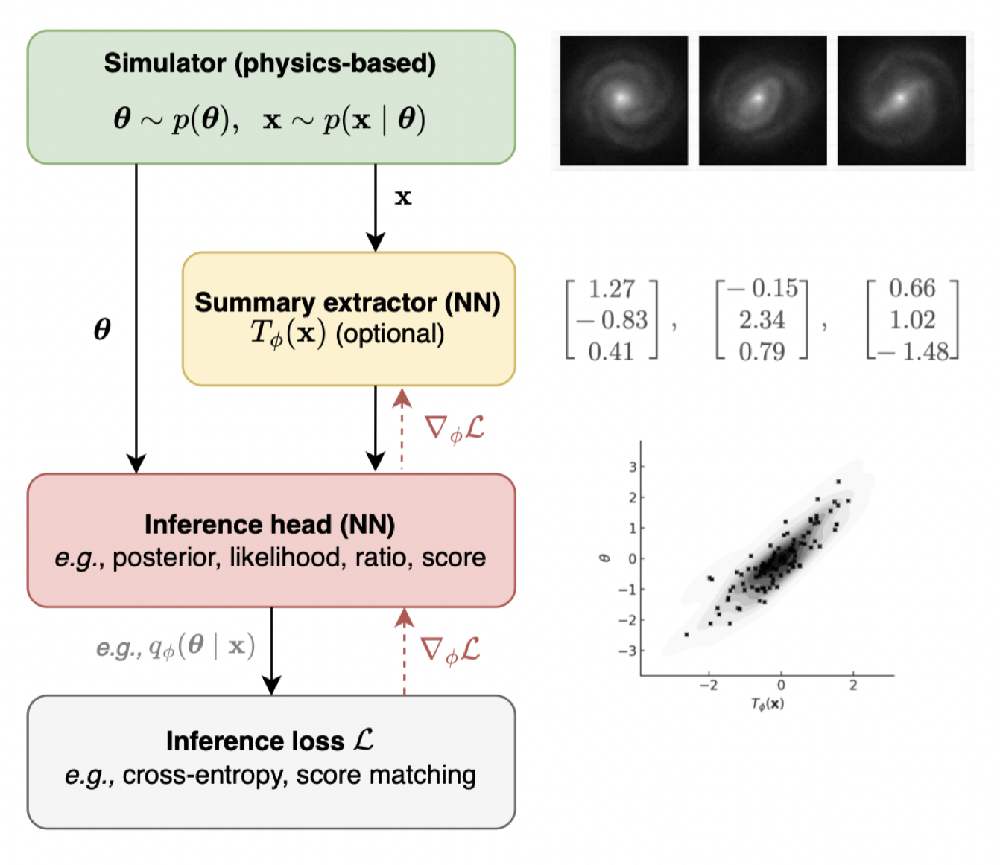
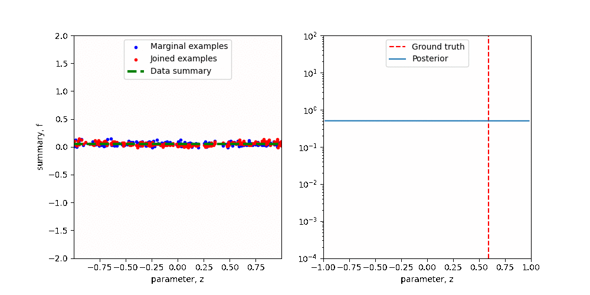
Foundations of SBI > Neural SBI
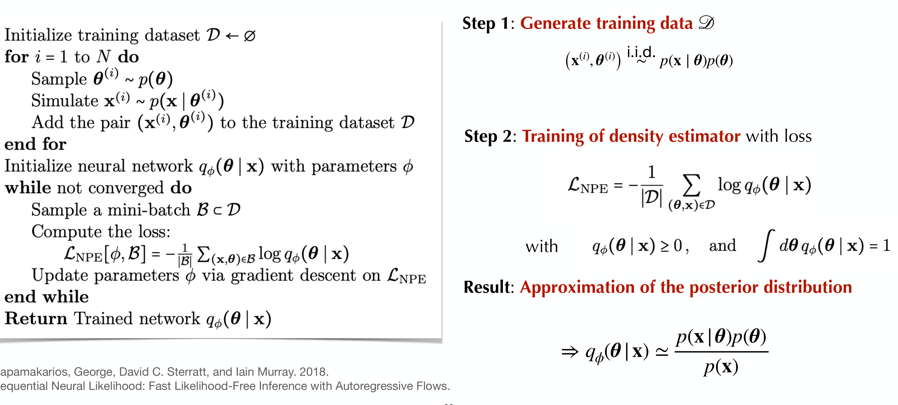
Papamakarios, Sterratt, Murray 2018 — Sequential Neural Likelihood: Fast Likelihood-Free Inference with Autoregressive Flows
Foundations of SBI > Flow matching
A prior, a likelihood, a posterior, an evidence — all of statistics is a statement about distributions.
We need to approximate probability distributions, \( q_\phi(\theta \mid x) \approx p(\theta \mid x) \), given only samples from a simulator — far more constrained objects than the functions of Part 1.
What a density must satisfy
Non-negative, \(q_\phi(\theta)\ge 0\).
Easy — exponentiate.
Normalized, \(\int q_\phi(\theta)\,d\theta = 1\).
Hard. This is a global
constraint: change the network anywhere and the integral changes everywhere.
And two operations, both fast
Evaluate — given \(\theta\), return \(q_\phi(\theta)\).
Importance weights, likelihoods, model comparison.
Sample — draw fresh \(\theta \sim q_\phi\).
Error bars, corner plots, propagating uncertainty.
Both get called millions of times in a real analysis, so “fast” is part of the specification, not a nicety. No classical representation gives you all of this at once.
Foundations of SBI > Flow matching
| representation | flexible? | evaluate | sample |
|---|---|---|---|
| Gaussian head network predicts \(\mu,\Sigma\) |
almost nothing | exact, instant | exact, instant |
| Energy-based \(q_\phi \propto e^{-E_\phi(\theta)}\) |
unrestricted | only up to \(Z\) | MCMC — slow |
| Normalizing flow invertible layers, tractable Jacobian |
architecture-limited | exact | exact |
| Flow matching learn a velocity field |
unrestricted MLP | ODE solve | ODE solve |
fit loop as Part 1.
Foundations of SBI > Flow matching
Start from a unit Gaussian and move the points until they are distributed like \(p\).
The motion is a velocity field \(v_\phi(\theta,t)\) — a simple MLP, taking a position \(\theta\) and a time \(t\in[0,1]\). Write \(\theta_0\sim\mathcal N(0,I)\) for a noise point and \(\theta_1\sim p\) for a data point.
1. Train. Sit on the straight line between a random pair and regress the velocity onto its direction:
2. Sample. Integrate the learned field from noise to data:
3. Evaluate. Integrate backwards, accumulating the divergence:
Lipman et al. 2022, arXiv:2210.02747 · Liu et al. 2022, arXiv:2209.03003 · Albergo & Vanden-Eijnden 2022, arXiv:2209.15571 · for GW posteriors: Dax et al. 2023, arXiv:2305.17161
Foundations of SBI > Flow matching
Straight lines cross, so no single pair defines the motion. Least squares averages them — and that average is exactly right.
To prove. With \(p_t=\mathrm{Law}(\theta_t)\), the field must satisfy the continuity equation — then the ODE's marginals are \(p_t\), and \(\theta(1)\sim p_1=p\):
Proof. For any test function \(\varphi\):
Foundations of SBI > Flow matching
Left: what training sees. Random pairs (noise \(\theta_0\), data \(\theta_1\)) joined by a straight line; the network is asked, at the dot \(\theta_t\), to output the arrow \(\theta_1-\theta_0\). Pairs are drawn independently — the lines cross wildly and no single pair knows anything about the target shape.
Right: what the average of those arrows does. Integrating \(d\theta/dt = v^\star(\theta,t)\) carries a Gaussian blob (t=0) onto the target (t=1). The crossings average out; the transport does not.
Both targets are shapes you meet in GW parameter estimation: a curved degeneracy, and multi-modality along a curve.
Nothing here is trained.
Foundations of SBI > Flow matching
The optimal velocity field for a finite sample set is known in closed form.
Take the straight-line interpolant and a target that is just a bag of points \(\{\theta_1^j\}\). At time \(t\), the paths starting from \(\mathcal N(0,I)\) put a Gaussian of width \((1-t)\) around each \(t\,\theta_1^j\), so the marginal is a mixture,
Given \(\theta\) and a specific endpoint \(\theta_1^j\), the noise point is pinned: \(\theta_0 = (\theta - t\,\theta_1^j)/(1-t)\), so that pair's arrow is \((\theta_1^j - \theta)/(1-t)\). The loss minimiser is the average arrow, weighted by how plausible each endpoint is:
That is what the browser evaluates — 420 particles against 420 target points, every frame. So the animation is not an approximation of flow matching: it is the field a perfectly trained network would converge to.
Foundations of SBI > Flow matching
One extra input to the velocity field, and a generative model becomes an inference engine.
We rarely want one distribution — we want a family indexed by an input. Feed the condition to the field alongside \(\theta\) and \(t\):
with the pairs drawn jointly from the simulator, \((\theta,x)\sim p(\theta)\,p(x\mid\theta)\): each training \(\theta\) comes with the \(x\) it produced.
And because the network learned the whole family at once, a new observation \(x_{\rm o}\) it has never seen costs one ODE solve, not a new training run: that is amortization, and it is the entire reason this machinery is interesting for GW astronomy.
Applications > Overview
Inference modes and problems SBI handles natively
Foundational
Handled natively
Underexplored regimes — what's not yet routine
Applications > Foundational aspects of SBI
After training, \(q_\phi(\mathbf{z}\mid\mathbf{x})\) provides instant inference results for any observation \(\mathbf{x}\)
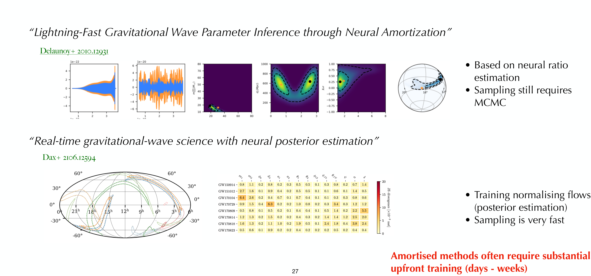
See also: Dax et al. 2021 (DINGO) arXiv:2106.12594 · Green & Gair 2020 arXiv:2008.03312
Applications > Foundational aspects of SBI
During the training, the simulator can include any effect we like (e.g. a transient contaminant), and SBI will marginalise over it at inference time. Neglecting it instead leads to biased results.
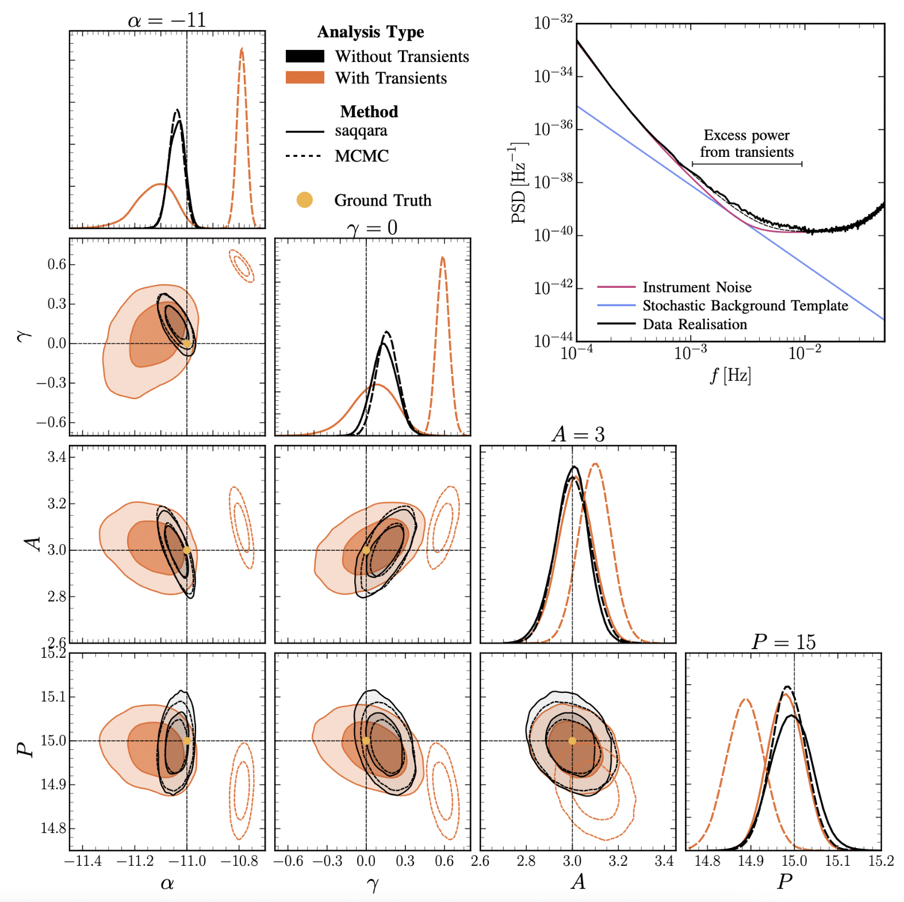
Alvey+ arXiv:2309.07954
Applications > Native capabilities of SBI
Instead of training the full posterior $q_\phi(\mathbf{z}_1, \mathbf{z}_2 \mid \mathbf{x})$, we can train a marginal posterior $q_\phi(\mathbf{z}_1 \mid \mathbf{x})$ for the parameters of interest $\mathbf{z}_1$, while marginalising over the nuisance parameters $\mathbf{z}_2$ (e.g. the second overlapping signal), and vice versa.
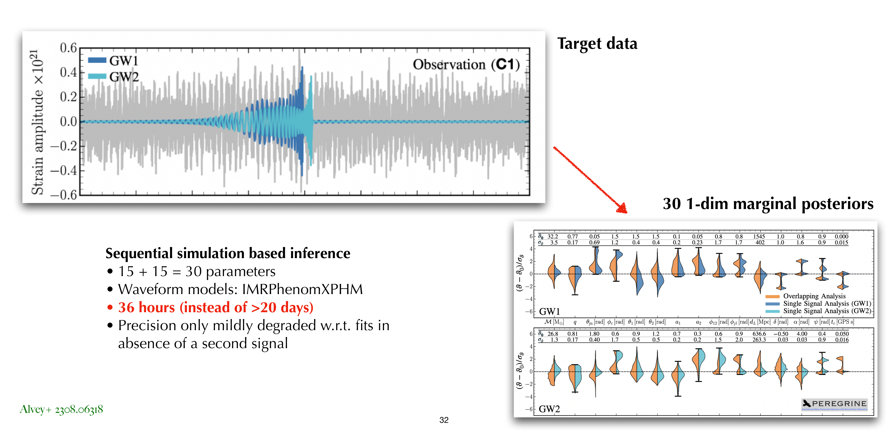
Applications > Underexplored capabilities of SBI
We want the posterior \(p(\theta\mid x_o)\) for a single target observation \(x_o\) (right, fixed). Simulating across the whole prior wastes most of the budget on \(\theta\) that could never produce \(x_o\).
The loop:
Each round the cloud tightens around the truth and the simulated rings start to resemble the target. A few rounds buy the accuracy a fixed budget could never reach.
Toy model: ring position encodes \((\theta_1,\theta_2)\); the simulator adds noise. Ellipses are illustrative, not a real fit.
See also: Papamakarios, Sterratt & Murray 2019 (SNL) arXiv:1805.07226 · Deistler, Gonçalves & Macke 2022 arXiv:2210.04815
Applications > Underexplored capabilities of SBI
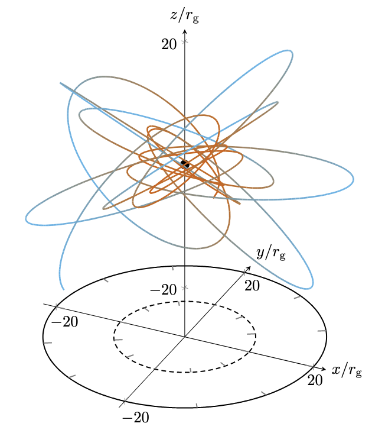
arXiv:1903.03686
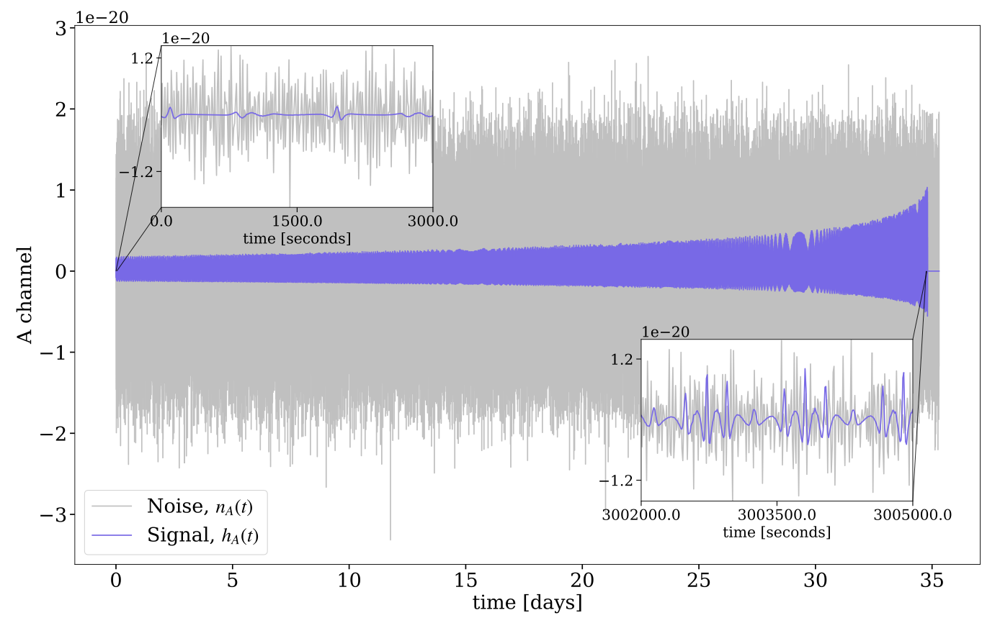
Cole, Alvey, Speri, CW, Bhardwaj, Gerosa, Bertone — arXiv:2505.16795
See also: Katz et al. 2021 (FastEMRIWaveforms) arXiv:2104.04582
Applications > Underexplored capabilities of SBI
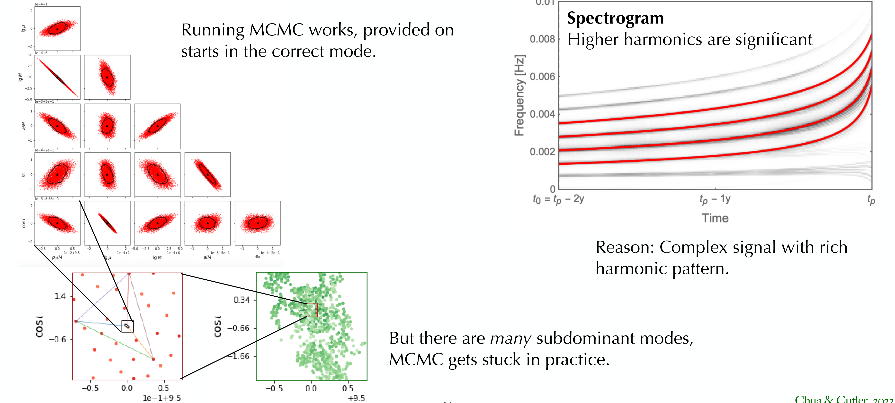
Chua & Cutler, 2023
Applications > Underexplored capabilities of SBI
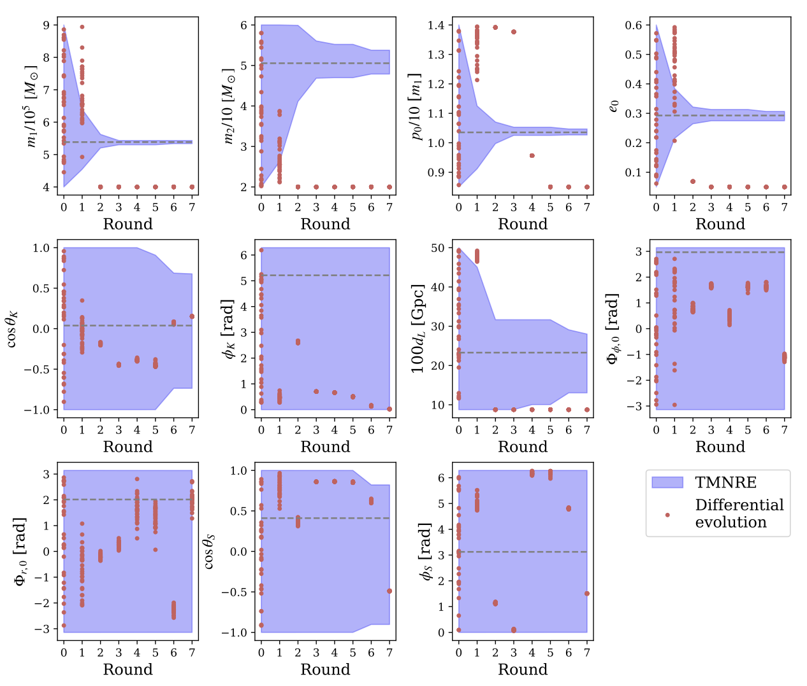
Cole, Alvey, Speri, CW, Bhardwaj, Gerosa, Bertone — arXiv:2505.16795
See also: Miller et al. 2021 (TMNRE) arXiv:2107.01214 · Bhardwaj et al. 2023 (peregrine) arXiv:2304.02035
Applications > Underexplored capabilities of SBI
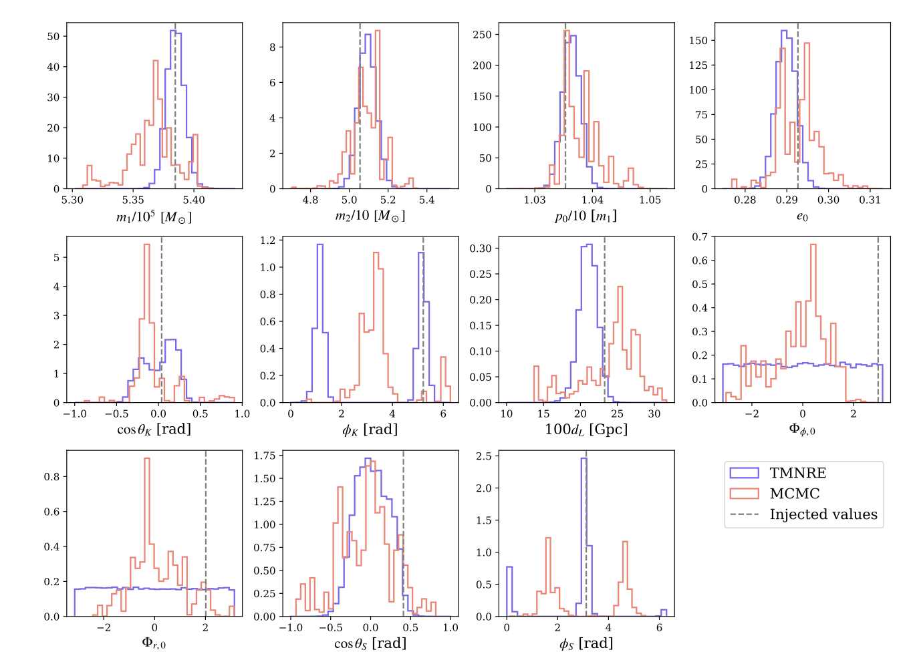
Cole, Alvey, Speri, CW, Bhardwaj, Gerosa, Bertone — arXiv:2505.16795
Applications > Underexplored capabilities of SBI
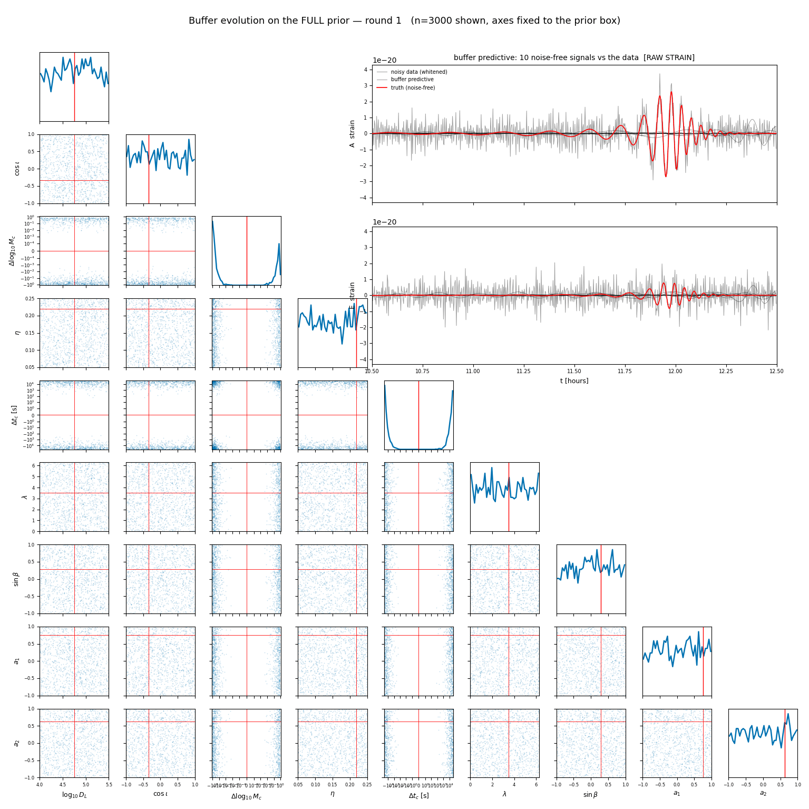
training buffer, round by round
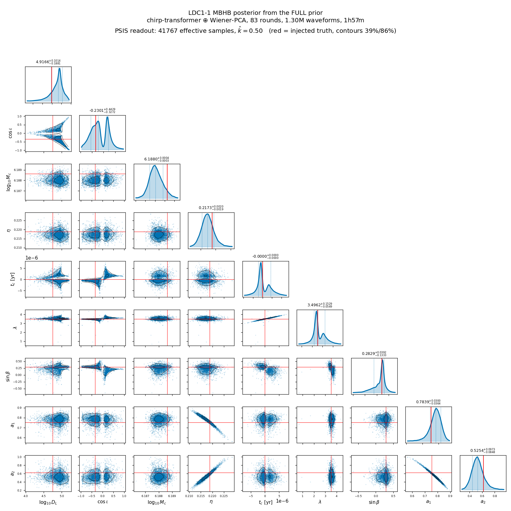
final posterior (red = injected truth)
From MLPs to LISA — everything above, in ~170 lines of PyTorch
Hands-on > The tutorial
Four parts. Plain PyTorch — no SBI framework, no installs.
| part | what you fit | new ingredient |
|---|---|---|
| 1 | a function — the frequency of a noisy sine | MLPs, gradient descent, overfitting, early stopping |
| 2 | a distribution — a spiral you can rotate and rescale | flow matching, conditioning |
| 3 | a posterior — where did the ball come from? | SBI, amortization |
| 4 | a toy gravitational wave | data compression (PCA) + sequential zoom |
| a massive black-hole binary in LISA data LDC1 “Radler”, 9 parameters, waveforms simulated live |
the companion notebook |
Everything also runs on CPU, just slower.
github.com/cweniger/
teaching-2607-LISA-Hackathon
tutorial_lisa_sbi.ipynb
Hands-on > The tutorial
You will see each method break before you are shown the thing that repairs it.